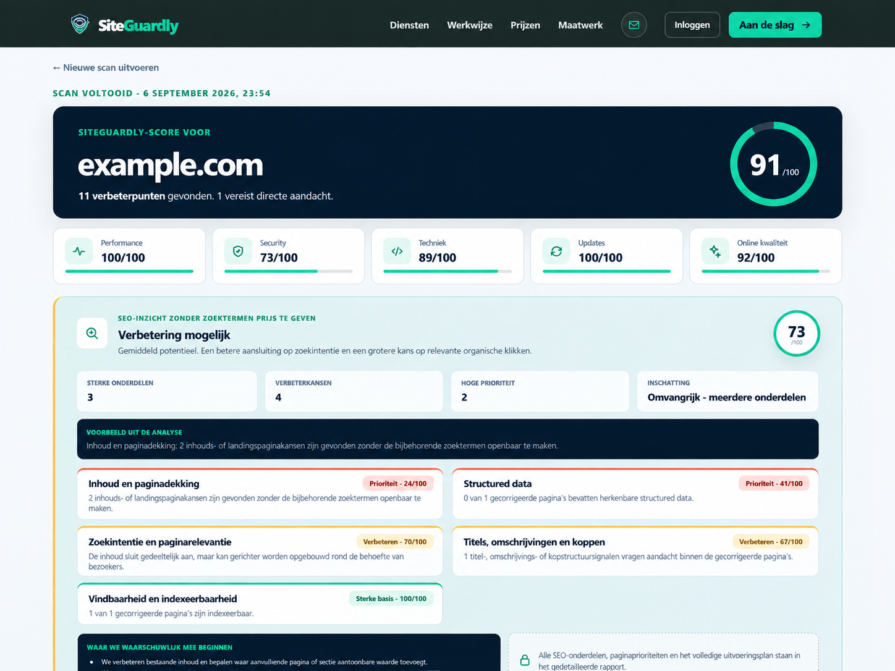
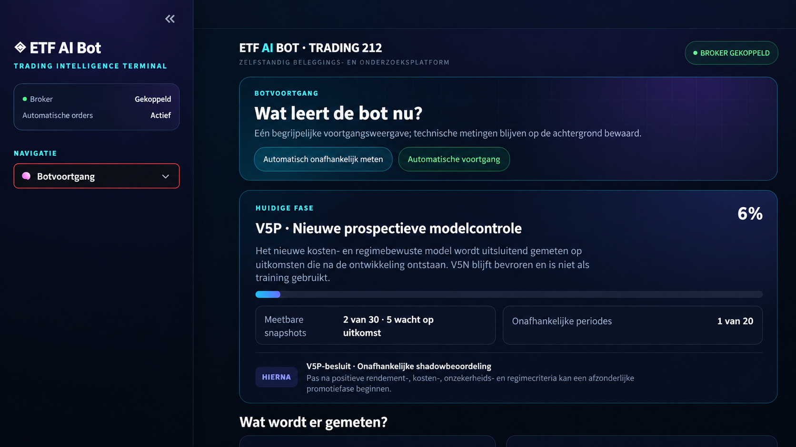
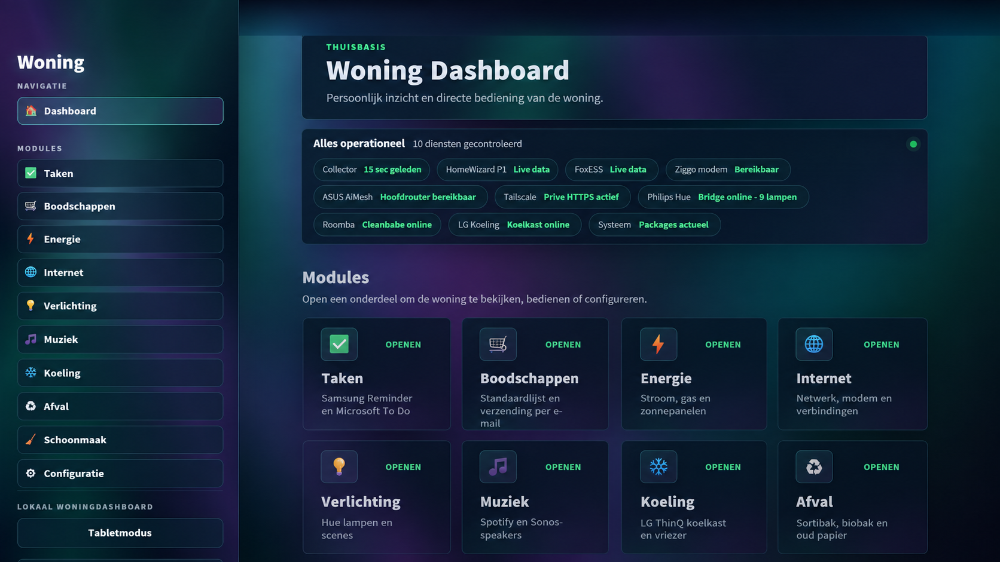
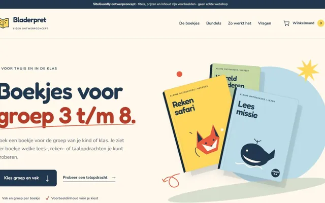
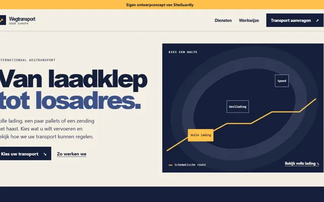
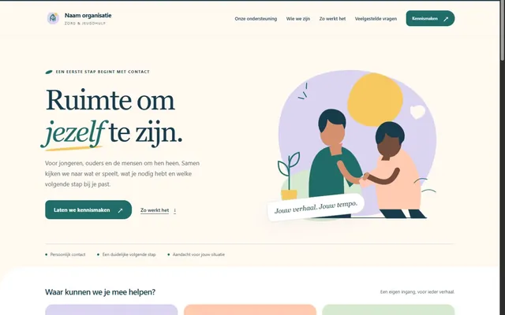
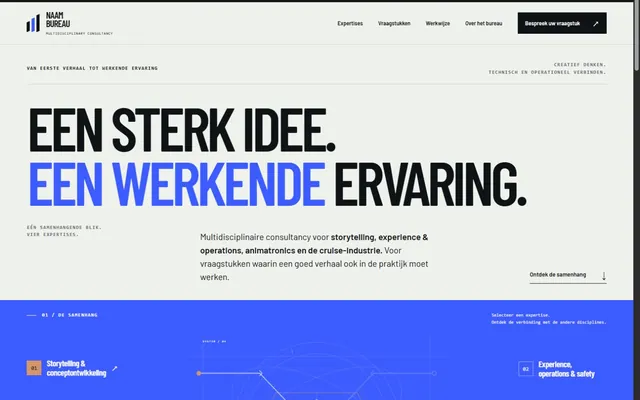
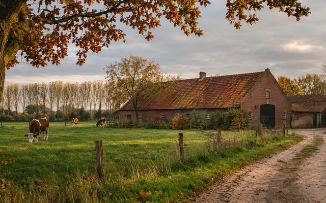
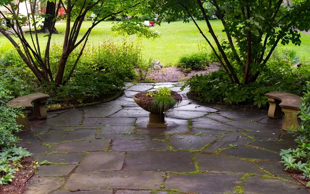
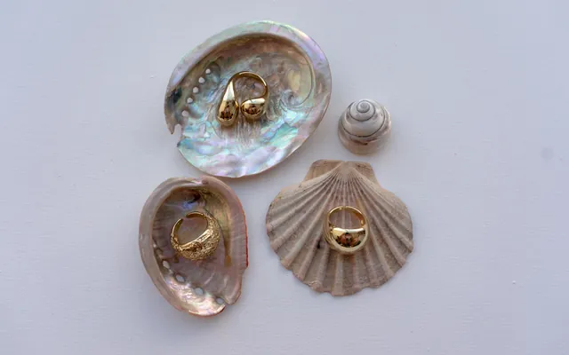

SiteGuardly Platform
A custom website quality, security and technical SEO platform with connectors, structured findings, customer reporting and controlled releases.
Read the engineering case study ↗Henk & Ellen Rensenbrink · Netherlands
We’re Henk and Ellen, the team behind SiteGuardly. Explore the websites and applications we build, try an interactive concept or look under the hood of a public code sample.
Selected work
Browse client work, our own products and public code samples. Every case tells you what you can see or try.

A custom website quality, security and technical SEO platform with connectors, structured findings, customer reporting and controlled releases.
Read the engineering case study ↗Our WooCommerce shop for custom WordPress plugins. Explore quotation and invoicing workflows, digital gift cards and the shop’s approach to product licences and updates.
Visit the shop ↗Read the case study ↗A live club website with event registrations, results workflows and PDF exports. The committee can manage its own content and processes.
Read the case study ↗Visit the live site ↗View the public code sample ↗A trip registration app modernised for PHP 8.4. Drivers can log trips from their phones, while administrators handle corrections and access separately.
Read the case study ↗A new website for a Dutch home support organisation, with separate routes for new and existing clients, a vacancy module and a complaints process.
Read the case study ↗
A defensive research and automation platform with data-quality gates, explainable decisions and a strict separation between research and execution.
Read the engineering case study ↗
A resilient interface combining energy, lighting, audio, network and household systems without exposing private device credentials.
Read the engineering case study ↗A working PHP example that centralises admin, CSV and webhook changes behind one testable state-change boundary.
Inspect the source code ↗Independent design concepts
These nine Dutch-language demos began as design concepts. They’re open for you to try, with sample content and no live order or enquiry submission.

BladerpretBrowse a children’s bookshop.
Van laadklep tot losadresFollow a shipment.
Samen VerderExplore routes to youth support.
BelevingsatelierExplore a consultancy concept.
Van erf naar tafelDiscover a farm shop.
TuinveldExplore a landscaper’s work.
Atelier VouwBrowse a design studio. Studio KaderExplore short-form campaigns.Expertise
Custom WordPress and WooCommerce architecture, themes, plugins, dashboards and migrations.
REST APIs, OAuth, webhooks, CRM, commerce, payment, accounting and marketplace connections.
Responsive dashboards, data pipelines, scheduled tasks, automation and resilient API clients.
Technical audits, structured data, information architecture, tracking and measurable remediation.
Malware investigation, hardening, access control, audit trails and safe recovery procedures.
Tests, documentation, staged delivery, monitoring and maintainable code ownership.
Delivery process
When the platform permits it, development takes place in a private sandbox. Progress, priorities and feedback remain visible on a shared Trello board. Henk leads technical development; Ellen handles client communication and coordination.
Clarify the objective, risks, data and acceptance criteria.
Implement and test in a controlled environment.
Share progress, receive comments and record approval.
Deploy, verify and document the completed change.
Public evidence, private responsibility